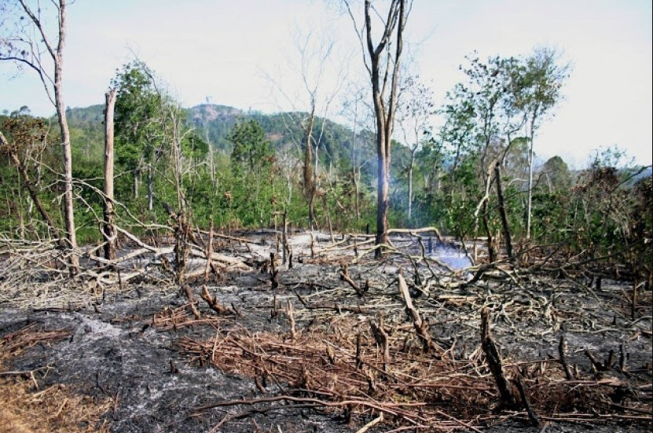

Hakikat Dalam Konteks Agama Islam
Bagaimanakah hakikat manusia menurut Islam? Hakikat manusia dapat dilihat dari berbagai perspektif. Dalam artikel ini, kita akan membahas hakikat manusia dari sisi penciptaan dan kedudukannya di muka bumi.
Hadist Tentang Proses Penciptaan Manusia
عَنْ عَبْدِ اللهِ بنِ مَسْعُوْدْ رَضِيَ اللهُ عَنْهُ قَالَ: حَدَّثَنَا رَسُوْلُ اللهِ صلى الله عليه وسلم وَهُوَ الصَّادِقُ المَصْدُوْقُ: إِنَّ أَحَدَكُمْ يُجْمَعُ خَلْقُهُ فِيْ بَطْنِ أُمِّهِ أَرْبَعِيْنَ يَوْمَاً نُطْفَةً، ثُمَّ يَكُوْنُ عَلَقَةً مِثْلَ ذَلِكَ،ثُمَّ يَكُوْنُ مُضْغَةً مِثْلَ ذَلِكَ،ثُمَّ يُرْسَلُ إِلَيْهِ المَلَكُ فَيَنفُخُ فِيْهِ الرٌّوْحَ،وَيَؤْمَرُ بِأَرْبَعِ كَلِمَاتٍ: بِكَتْبِ رِزْقِهِ وَأَجَلِهِ وَعَمَلِهِ وَشَقِيٌّ أَوْ سَعِيْدٌ. فَوَالله الَّذِي لاَ إِلَهَ غَيْرُهُ إِنََّ أَحَدَكُمْ لَيَعْمَلُ بِعَمَلِ أَهْلِ الجَنَّةِ حَتَّى مَا يَكُوْنُ بَيْنَهُ وَبَيْنَهَا إلاذِرَاعٌ فَيَسْبِقُ عَلَيْهِ الكِتَابُ فَيَعْمَلُ بِعَمَلِ أَهْلِ النَّارِ فَيَدْخُلُهَا، وَإِنَّ أَحَدَكُمْ لَيَعْمَلُ بِعَمَلِ أَهْلِ النَّارِ حَتَّى مَايَكُونُ بَيْنَهُ وَبَيْنَهَا إلا ذِرَاعٌ فَيَسْبِقُ عَلَيْهِ الكِتَابُ فَيَعْمَلُ بِعَمَلِ أَهْلِ الجَنَّةِ فَيَدْخُلُهَا
Artinya: "Dari Abdullah bin Mas’ud Radhiallahu ‘Anhu, dia berkata: telah berkata kepada kami Rasulullah Shallallahu ‘Alaihi wa Sallam, dan dia adalah orang yang jujur lagi dipercaya: “Sesungguhnya tiap kalian dikumpulkan ciptaannya dalam rahim ibunya, selama 40 hari berupa nutfah (air mani yang kental), kemudian menjadi ‘alaqah (segumpal darah) selama itu juga, lalu menjadi mudghah (segumpal daging) selama itu, kemudian diutus kepadanya malaikat untuk meniupkannya ruh, dan dia diperintahkan mencatat empat kata yang telah ditentukan: rezekinya, ajalnya, amalnya, kesulitan atau kebahagiannya.
Hakikat Penciptaan Manusia
Hakikat manusia menurut Islam dari sisi penciptaan dapat dilihat dari kesempurnaan manusia sebagai makhluk, hingga tujuannya diciptakan di muka bumi. Berikut penjelasan yang dilansir dari laman Fakultas Agama Islam Universitas Medan Area (UMA):
1. Manusia Makhluk Paling Sempurna
Manusia diciptakan Allah SWT sebagai makhluk yang paling sempurna dibandingkan makhluk lainnya. Dari segi fisik, manusia memiliki indera dan organ dalam yang lengkap dan detail.
Dari segi nonfisik, manusia dianugerahi akal dan pengetahuan hingga malaikat pun harus bersujud kepada Adam AS. Hal ini sesuai dengan surat At-Tin ayat 4:
لَقَدْ خَلَقْنَا الْاِنْسَانَ فِيْٓ اَحْسَنِ تَقْوِيْمٍۖ
Artinya: “sungguh, Kami benar-benar telah menciptakan manusia dalam bentuk yang sebaik-baiknya.” (QS At-Tin : 4)
2. Diciptakan untuk Mengabdi kepada Allah
Yang kedua, hakikat manusia menurut Islam adalah diciptakan untuk mengabdi kepada Allah SWT. Ini juga menjadi salah satu bukti kekuasaan Allah atas makhluknya. Nabi Adam sebagai manusia pertama juga mengakui Allah sebagai Tuhannya. Dengan demikian, keturunan Adam pun harus senantiasa beribadah dan menyembah Allah SWT sebagaimana surat Az-Zariyat ayat 56:
وَمَا خَلَقْتُ الْجِنَّ وَالْاِنْسَ اِلَّا لِيَعْبُدُوْنِ
Artinya: “Tidaklah Aku menciptakan jin dan manusia kecuali untuk beribadah kepada-Ku.” (QS Az-Zariyat : 56)
3. Manusia Sebagai Khalifah
Manusia juga diturunkan Allah ke bumi sebagai khalifah. Dalam bahasa Arab, khalifah berasal dari kata khalafa atau khalifatan yang berarti meneruskan, sehingga khalifah berarti penerus agama Islam dan ajaran dari Allah SWT.
Khalifah wajib menjalankan tugasnya untuk menjaga bumi dan makhluk lainnya. Di hari akhir, manusia akan dimintai pertanggungjawaban atas apa yang diperbuatnya di dunia. Ini sesuai dengan surat Al-Baqarah ayat 30:
وَاِذْ قَالَ رَبُّكَ لِلْمَلٰۤىِٕكَةِ ِانِّيْ جَاعِلٌ فِى الْاَرْضِ خَلِيْفَةًۗ قَالُوْٓا اَتَجْعَلُ فِيْهَا مَنْ يُّفْسِدُ فِيْهَا وَيَسْفِكُ الدِّمَاۤءَۚ وَنَحْنُ نُسَبِّحُ بِحَمْدِكَ وَنُقَدِّسُ لَكَۗ قَالَ اِنِّيْٓ اَعْلَمُ مَا لَا تَعْلَمُوْنَ
Artinya: “Tidaklah Aku menciptakan jin dan manusia kecuali untuk beribadah kepada-Ku.” (QS Az-Zariyat : 56)
Kedudukan Manusia dalam Kehidupan
Hakikat manusia juga dapat dilihat dari kedudukannya dalam kehidupan. Dikutip dari situs Learning Management System (LMS) SPADA Kemdikbud, kedudukan manusia dalam kehidupan dapat dibedakan dari tiga kata dalam Al-Qur'an untuk menyebut manusia.
1. Al-Basyar
Dalam Al-Qur'an, kata Al-Basyar disebut sebanyak 36 kali dan tersebar di 26 surat. Secara etimologi, al-basyar memiliki makna kulit kepala, wajah, atau tubuh yang menjadi tempat tumbuhnya rambut. Maksudnya, nama ini menggambarkan bahwa manusia secara biologis didominasi oleh kulitnya dibanding rambutnya. Ini berbeda dengan hewan yang didominasi bulu atau rambutnya.
Arti lain dari Al-Basyar adalah mulamasah, yaitu persentuhan antara kulit laki-laki dan perempuan. Makna ini dapat dipahami bahwa manusia adalah makhluk yang memiliki segala sifat kemanusiaan dan keterbatasan, seperti makan, minum, seks, keamanan, kebahagiaan, dan lainnya.
2. Al-Insan
Manusia juga disebut sebagai al-insan yang berasal dari kata al-uns, yang bisa diartikan harmonis, lemah lembut, tampak, atau pelupa. Kata ini digunakan dalam Al-Qur'an untuk menunjukkan totalitas manusia sebagai makhluk jasmani dan rohani. Kata Al-Insan disebut dalam Al-Qur'an sebanyak 73 kali dan tersebar dalam 43 surah.
Dari dimensi al-Insan dan al-Basyar, manusia dianggap sebagai makhluk berbudaya yang mampu berbicara, mengetahui baik dan buruk, serta mengembangkan ilmu pengetahuan dan peradaban. Namun manusia juga memiliki nilai insaniyah yang juga bisa membuat kerusakan di bumi.
3. An-Nas
Kata An-Nas dinyatakan dalam al-Qur'an sebanyak 240 kali dan tersebar dalam 53 surah.Al-Nas dimaksudkan untuk menunjukkan eksistensi manusia sebagai makhluk sosial secara keseluruhan, tanpa melihat status keimanan atau kekafirannya. An-Nas lebih bersifat umum daripada al-insan. Hal ini bisa dilihat dari firman Allah SWT pada QS. Al-Baqarah Ayat 24:
فَاِنْ لَّمْ تَفْعَلُوْا وَلَنْ تَفْعَلُوْا فَاتَّقُوا النَّارَ الَّتِيْ وَقُوْدُهَا النَّاسُ وَالْحِجَارَةُۖ اُعِدَّتْ لِلْكٰفِرِيْنَ
Artinya: “Jika kamu tidak (mampu) membuat(-nya) dan (pasti) kamu tidak akan (mampu) membuat(-nya), takutlah pada api neraka yang bahan bakarnya adalah manusia dan batu yang disediakan bagi orang-orang kafir." (QS Al-Baqarah : 24)
Contoh Perilaku Manusia yang Tidak Sesuai Dengan Ajaran Agama
Dalam kehidupan sehari-hari, masih banyak perilaku manusia yang tidak sesuai dengan ajaran agama Islam. Padahal, manusia telah diciptakan sebagai makhluk yang sempurna, memiliki akal, dan diberi amanah sebagai khalifah di muka bumi. Berikut beberapa contoh perilaku yang menyimpang dari ajaran agama.
1. Berbuat Kerusakan di Muka Bumi
Manusia sebagai khalifah memiliki tanggung jawab untuk menjaga dan merawat bumi. Namun, masih banyak manusia yang justru melakukan kerusakan, seperti membuang sampah sembarangan, merusak lingkungan, dan melakukan tindakan yang merugikan makhluk lain.
Perilaku ini bertentangan dengan ajaran Islam yang menekankan pentingnya menjaga keseimbangan alam. Jika manusia terus melakukan kerusakan, maka dampaknya tidak hanya dirasakan oleh lingkungan, tetapi juga oleh manusia itu sendiri.

2. Meninggalkan Ibadah
Tujuan utama manusia diciptakan adalah untuk beribadah kepada Allah SWT. Namun, dalam kenyataannya masih banyak manusia yang lalai dan meninggalkan kewajiban ibadah seperti shalat, puasa, dan lainnya. Hal ini menunjukkan bahwa manusia belum menjalankan perannya sebagai hamba dengan baik. Padahal, ibadah merupakan bentuk hubungan antara manusia dengan Allah yang harus dijaga dalam kehidupan sehari-hari.
3. Tidak Jujur dan Berbuat Curang
Kejujuran merupakan salah satu nilai penting dalam ajaran Islam. Namun, masih banyak manusia yang melakukan kebohongan, penipuan, dan kecurangan demi keuntungan pribadi. Perilaku ini tidak hanya merugikan orang lain, tetapi juga merusak kepercayaan dalam kehidupan sosial. Islam mengajarkan untuk selalu berkata jujur dan amanah dalam setiap tindakan.
File Materi
Download PDF